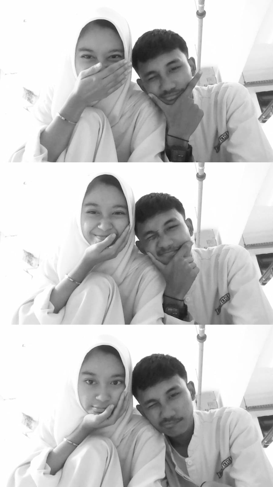
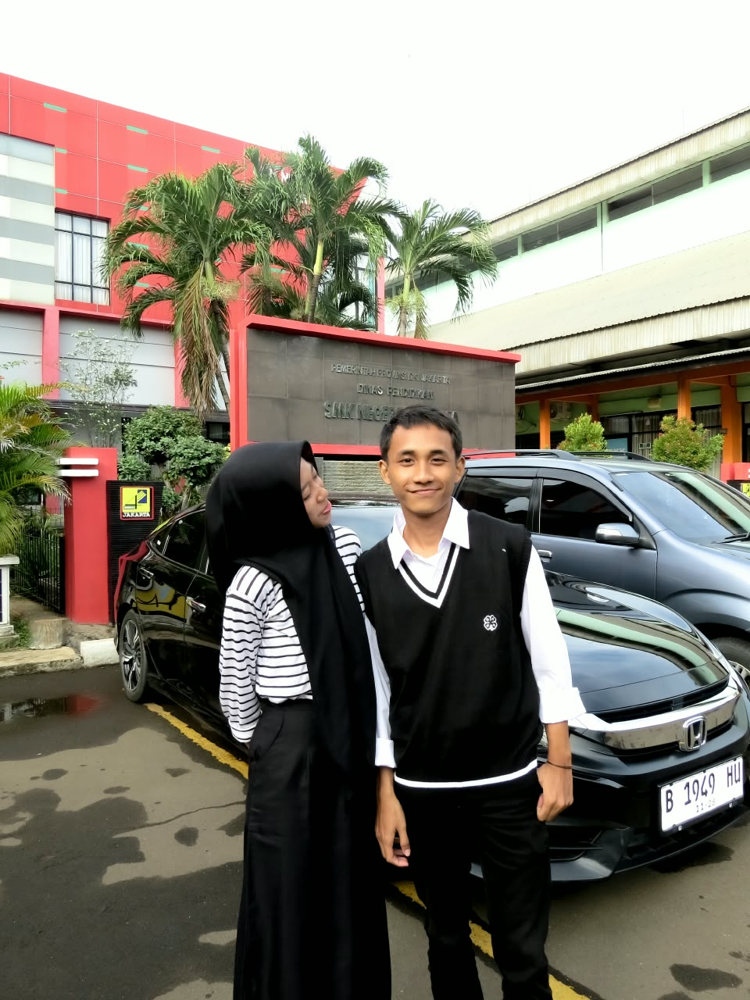
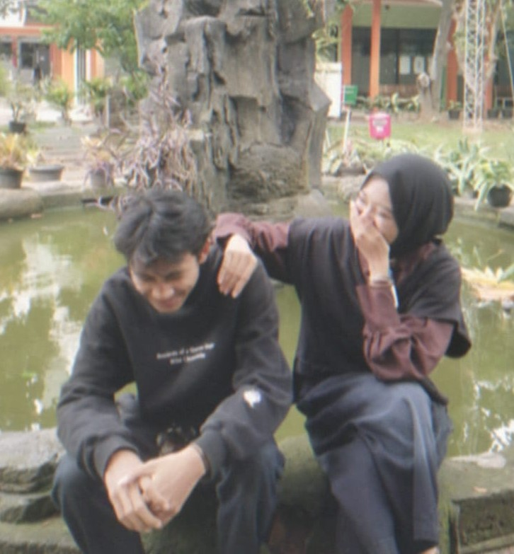
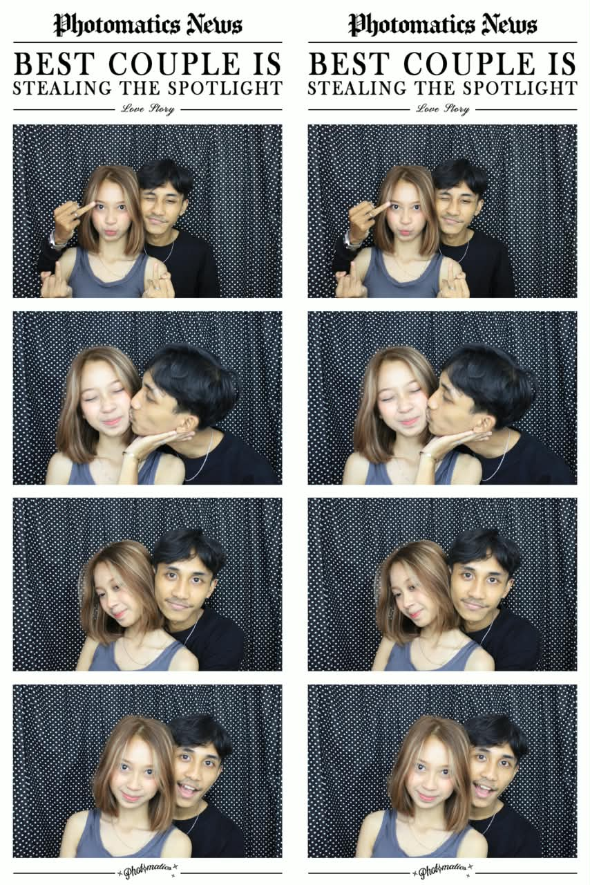
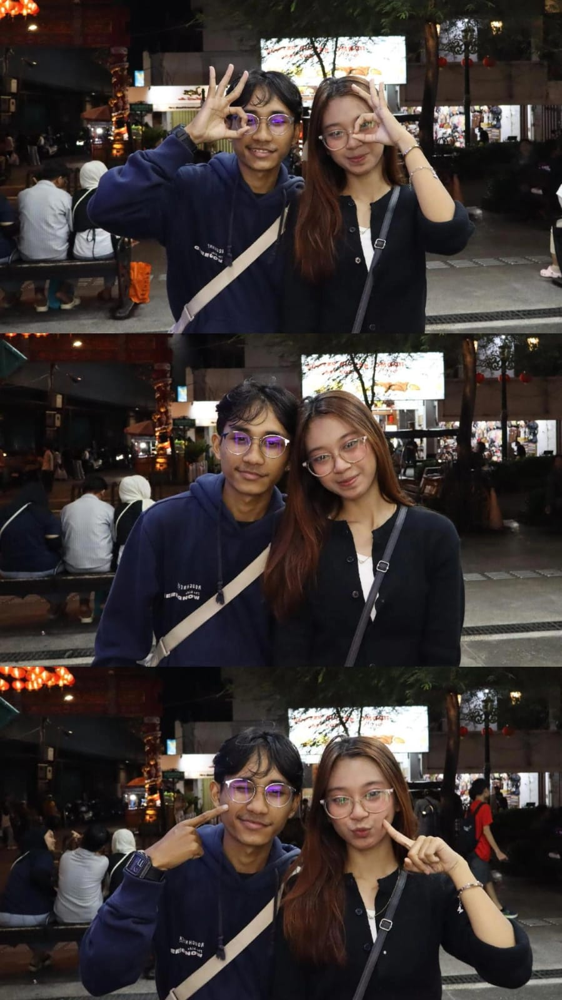
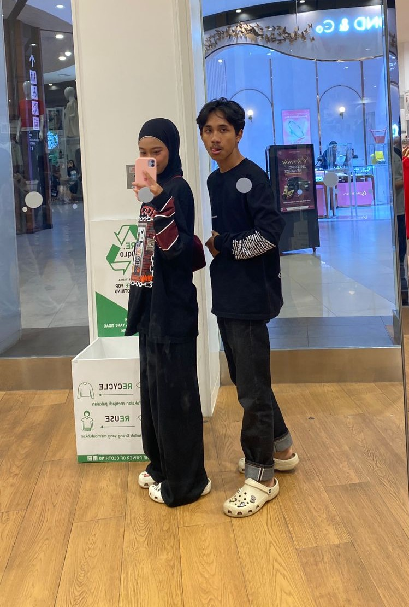

specially made for my honey bunny bittersweet
Enter Our
Secret Code
hayooo berapa pwnyaa.
for you, El
There are things
I never got to say.
↓
hamlooo cantikkk
hmmmm kadang aku sendiri bingung sama perasaan ku, hatiku dan lain-lain.
kita udah hampir dua bulan menyatakan selesai, tapi kita masih ketemu, masih bisa bercanda, masih bisa main bareng. kadang semuanya kerasa biasa aja, kayak nggak ada yang berubah.
tapi ternyata buat ku, nggak sesimpel itu.
bisa ketawa bareng kamu, ngobrol sama kamu, bahkan ngelakuin hal-hal kayak biasanya. tapi bukan berarti perasaan aku buat kamu juga udah biasa aja.
aku kira mungkin lama-lama bakal terbiasa sama keadaan kita yang sekarang. ternyata makin ke sini aku malah makin sadar kalau ada sesuatu yang masih aku pengenin, dan itu yaa kita. wkwkkw agak alay maafff
bukan berarti aku nggak bisa jalanin hari-hari aku tanpa kamu. cuma kalau boleh jujur, aku masih pengen jalanin lebih banyak hari bareng kamu. (tiappp hariiii jugaa bareng kamuuuu awokawokawok)
bukan berarti aku nggak bisa jalanin hari-hari aku tanpa kamu, bukan juga karena aku nggak punya siapa-siapa lagi. cuma kalau ditanya apa aku masih pengen sama kamu, jawabannya ya jelasssssss masih awokawokawok.
dan gue rasa gue nggak bisa terus-terusan pura-pura biasa aja kalau sebenernya perasaan gue yaaa masih ada. deymmmmmm
you were a part of my everyday
Ada hal-hal kecil yang mungkin dulu terasa biasa aja(ngga juga sii org kamu selalu special pake telor 2 hhe). Obrolan random, candaan nggak penting, kabar sederhana, atau momen ketika kita cuma saling menemani.
Baru setelah semuanya berubah, aku sadar kalau hal-hal sederhana itu juga bisa punya tempat yang besar di hati seseorang.
Beberapa hal mungkin sudah lewat, tapi bukan berarti semuanya nggak pernah berarti.
Aku nggak berharap semuanya langsung mudah.
Aku tahu perasaan nggak bisa diminta begitu saja(ngga kaya minta beli seblak). Kalau ada hal yang menyakitkan, hal itu juga nggak otomatis hilang hanya karena seseorang bilang kangen.
Kalau suatu saat kita memilih untuk bicara lagi, aku berharap kita bisa saling mendengarkan, menjelaskan apa yang selama ini belum jelas, dan jujur tentang hal-hal yang perlu diperbaiki.
Aku nggak ingin kembali hanya karena takut kehilangan. Aku ingin, kalau memang kita sama-sama mau, kita mencoba karena kita siap berusaha dengan cara yang lebih baik.
Aku nggak bisa mengubah hal yang lalu(terutamaa egoo besar kamu hhe), tapi aku selalu bisa meluk ego, api amarah kamu, capenya kamu, dan apapun yang kamu alami aku selalu siap memeluknya, bahkan kalo kamu lagi kaya hutan di kalimantan juga aku orang yang sanggup padamin sendirian wkwkwk.
Some moments
still mean a lot.
Beberapa potongan cerita kita yang ingin aku simpan dengan baik.

Taruh foto pertama di siniDari awal yang sederhana, kita mulai punya cerita sendiri.

Taruh foto kedua di siniHal-hal kecil yang dulu terasa biasa, sekarang jadi kenangan.

Taruh foto ketiga di siniAda hari-hari yang akan selalu jadi bagian dari perjalanan kita.

Taruh foto keempat di siniBukan karena semuanya sempurna, tapi karena momen itu pernah nyata.

Taruh foto kelima di siniAku belajar bahwa kenangan bisa tetap berarti, meski keadaan berubah.

Taruh foto keenam di siniKalau kita mencoba lagi, aku berharap kita datang dengan lebih dewasa dan jujur.
Kenangan ini bukan untuk membuatmu merasa harus kembali. Aku cuma ingin menghargai bagian hidup yang pernah kita jalani bersama.
El, if you're willing…
Can we
start again?
Aku nggak bisa mengubah apa yang sudah terjadi. Tapi kalau kamu juga masih ingin mencoba(HARUSSS JIRRR INI WAJIB!!!), aku ingin kita bicara baik-baik, jujur satu sama lain, dan melihat apakah kita bisa membangun sesuatu yang lebih baik dari sebelumnya.
Maukah kamu memberi kita kesempatan untuk mencoba lagi?
Terima kasih sudah membaca sampai akhir.